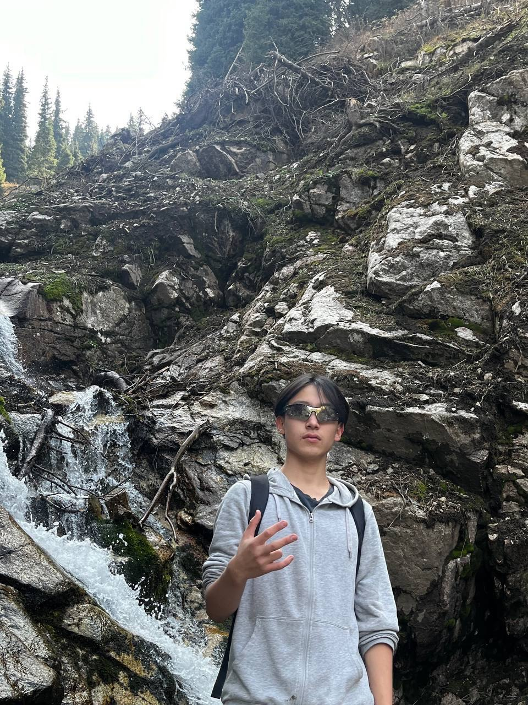

Aim For The Stars, If You Fail, You'll Land On The Moon
Автобиография
Жиенбаев Әділ - Республикалық физика математика мектебінің 10 сынып оқушысы, жаратылыстану ғылымдары бойынша түрлі зияткерлік олимпиадалардың жүлдегері және жеңімпазы. Ең маңызды жетістіктердің қатарында Қазақстан білім олимпиадасы (КБО), жаратылыстану ғылымдары бойынша республикалық олимпиаданың және Халықаралық жасөспірімдер жаратылыстану-ғылыми олимпиадасының (IJSO) медальдары бар. Бұл жетістіктер оның адалдығын, аналитикалық қабілетін және терең білімге деген ұмтылысын көрсетеді. Академиялық жетістіктерден басқа, Әділ музыканы жақсы көреді және домбырада шебер ойнайды. Ұлттық аспапта ойнау арқылы ол туған өлкенің мәдениеті мен дәстүрлеріне деген сүйіспеншілігін білдіреді. Болашақта Әділ Ғылым мен білім саласындағы дамуды жалғастыруды, сондай-ақ қоғамдастықтың зияткерлік және мәдени өміріне белсенді қатысуды жоспарлап отыр./p>
Жетістіктері
Халықаралық Жәутіков Олимпиадасы - күміс және қола медальдар, Халықаралық жасөспірімдер арасындағы жаратылыстану пәндерінен олимпиада - күміс медальдар, Республикалық олимпиада - күміс медаль, Қазақстан білім олимпиадасы - Алтын және күміс медальдар, Республикалық жасөспірімдер олимпиадасы - қола медаль.
Таңдаған мамандығы
Мен физиканы таңдадым, өйткені бұл маған айналамдағы әлемнің қалай жұмыс істейтінін түсінуге көмектеседі. Басынан бастап мені күрделі құбылыстарды қарапайым заңдар мен формулалар арқылы түсіндіру мүмкіндігі қызықтырды. Физика бойынша олимпиадалар мен конкурстарға қатысу маған жүйелі ойлауға, тапсырмаларға басқа бұрыштан қарауға және әр тапсырманың артында қызықты жұмбақ көруге үйретті. Мен ғылымға үлес қосу және басқаларды физиканы үйренуге шабыттандыру үшін осы салада одан әрі дамуға тырысамын.
Тарихта атыңды қалдыруы
Мен тарихта ғылым мен білімдегі жетістіктеріме байланысты із қалдырғым келеді. Мен үшін жаңа нәрсені біліп қана қоймай, оны басқа адамдармен бөлісу, құрдастарымды және келесі ұрпақты физикамен айналысуға және әлемді зерттеуге шабыттандыру маңызды. Менің мақсатым-қоғамға табиғат заңдарын жақсы түсінуге, технологияны дамытуға және адамдардың өмірін жақсартуға білімді қолдануға көмектесетін үлес қосу. Мен өз іс-әрекеттеріммен және жетістіктеріммен тарихта жағымды және мағыналы із қалдыра аламын деп сенемін.